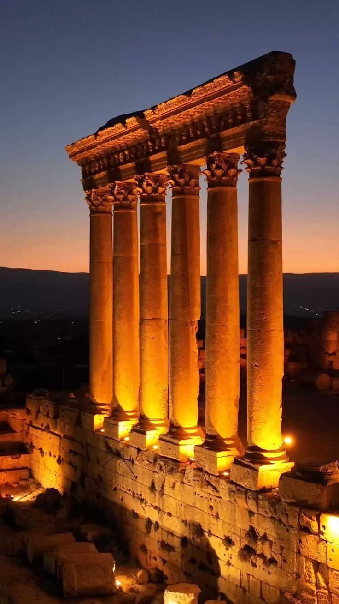
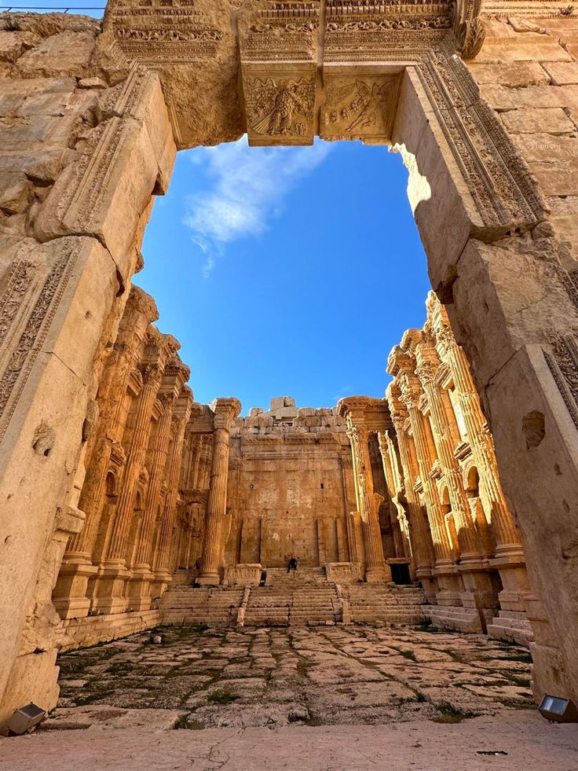

Baalbek
This Phoenician city, where a triad of deities was worshipped, was known as Heliopolis during the Hellenistic period. It retained its religious function during Roman times, when the sanctuary of the Heliopolitan Jupiter attracted thousands of pilgrims. Baalbek, with its colossal structures, is one of the finest examples of Imperial Roman architecture at its apogee.
Baalbek became one of the most celebrated sanctuaries of the ancient world, progressively overlaid with colossal constructions which were built during more than two centuries. Its monumental ensemble is one of the most impressive testimonies of the Roman architecture of the imperial period.
Europeans and Baalbek
European attention was first directed to the ruins at Baalbek in the 16th century. Much of the ancient settlement had been destroyed by earthquake, but in 1898–1903 a German expedition excavated the two huge Roman temples and began to reconstruct the ruins. Extensive clearings and repairs were accomplished under the French mandate and, later, by the Lebanese government. In the mid-1970s, however, protection of its treasures languished when Bekaa became a stronghold of Palestinian and Syrian forces and, later, of Muslim and Christian factions in Lebanon’s civil war.
One of the principal structures on the site is the Temple of Jupiter (completed 2nd century ce), only portions of which remain. It was a massive building, entered by a propylaea, or entranceway, leading to a hexagonal forecourt and then to a rectangular main court 343 feet (104.5 meters) long and 338 feet (103 meters) wide. The court was surrounded by elaborately decorated exedrae (semicircular benches) and opened onto a portico whose 84 granite columns were brought from Aswan in Upper Egypt.
Baalbek Facts
Some curious facts about the Baalbek temple are that you will see stone lotuses carved on the temple’s ceilings. That is intriguing because there are no lotuses in Lebanon. But when I later came to India, I saw that the lotus is the most common symbolism of spirituality here. I haven’t seen an Indian temple without one. Secondly, the foundation stones of the temple are supposed to weigh eight hundred tonnes each. The ancients transported these immense stones, and also erected huge columns, which are at least 10 feet in diameter and 50 feet high. It is said that they were moved with the help of elephants, but people don’t give much credence to this as there are no elephants in West Asia.
Baalbek: Fascinating Facts
Temple of Bacchus
One of the best-preserved Roman temples, the Temple of Bacchus is famous for its grand architecture.
Festival of Baalbek
This annual event celebrates music, culture, and the arts, bringing thousands to the site.
Roman Ruins
Baalbek’s Roman ruins are some of the most important in the Middle East, offering a glimpse into ancient civilization.
UNESCO World Heritage
Baalbek was designated a UNESCO World Heritage site in 1984 for its cultural significance.